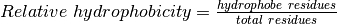

Protein module¶
-
src.protein.build_prot_dict(pdb_file, accessible_residues)¶ - Get the coordinates of alpha carbones in the PDB
- Check if the residue is accessible to solvant
- Builds a dictionnary compiling infos on:
- 3D coordinates of accessible residues
- value of relative accessibility to solvant
- residue name
- Args:
- pdb_file: The protein’s PDB file accessible_residues: Dictionnary containing the accessible residues and their relative accessibility value
- Returns:
- dict: Residue_id:
- Vector(x, y, z)
- All_atoms_rel_accessibility_value
- Residue_name
Vector: Protein’s center_of_mass
-
src.protein.generate_membranes(processed_lines, best_results, resolution)¶ Generate points in the space to simulate the membranes. They will be represented in PyMol at the end as 2 planes like both membranes.
- Args:
- processed_lines: A list containing lines (dictionaries) with their
- respective slices infos and values of average hydrophobicity
- best_results: A list [(plane_normal, average_hydrophobicity),
- start_index, best_index, best, nb_steps, shortest_distance]
- Returns:
- tuple: points_membrane_1, points_membrane_2
-
src.protein.get_best_results(processed_lines)¶ Parse the results of the parallelization. Finds the line with the highest average hydrophobicity value and determines the range of slices maximizing the accessible residues hydrophobicity, which will point to the famous transmembrane area !
- Args:
- processed_lines: A list containing lines (dictionaries) with their
- respective slices infos and values of average hydrophobicity
- Returns:
- list: [(plane_normal, average_hydrophobicity), start_index,
- best_index, best, nb_steps, shortest_distance]
-
src.protein.get_com(x, y, z, nb_ca)¶ Calculate the Center Of Mass from a list of coordinates
Parameters: - x – Cumulative sum of C_alpha’s x coordinates
- y – Cumulative sum of C_alpha’s y coordinates
- z – Cumulative sum of C_alpha’s z coordinates
- nb_ca – Number of alpha carbons in the protein
Returns: The center of mass of the protein as Vector(x, y, z)
Return type:
-
src.protein.keep_accessible_residues(naccess_rsa)¶ From the output of naccess we keep only accessible residues which have a all_atoms_rel value > 30 (arbitrary threshold)
Parameters: naccess_rsa – A dictionnary containing the output of naccess’s calculations Returns: Keys are the residue ids and as value their solvant accessible area Return type: dict
-
src.protein.max_sub_array_sum(array)¶ Implementation of the Kadane’s algorithm to solve the maximum sub-array problem in O(n) time and O(1) space. It finds the maximum contiguous subarray and print its starting and end index. Here it will return the indexes of the slices between which there is the maximum hydrophobicity: the area of the membrane !
- Args:
- array: Numpy array containing the relative hydrophobicity of all
- the slices of the best line
- Returns:
- tuple: (a, b, c) such that sum(array[a:b]) == c and c is maximal
-
src.protein.scale_ca_coords(prot_dict, center_of_mass)¶ Place the cartesian system centered in (0, 0, 0) origin
Parameters: prot_dict – Coordinates of all c_alphas of the protein
-
src.protein.slice_relative_hydrophobicity(residues, nb_residues_in_slice)¶ Calculates the relative hydrophobicity of a list of residues
Returns:  Return type: float